Εἰς τὸν δοθέντα κύκλον τῇ δοθείσῃ εὐθείᾳ μὴ μείζονι οὔσῃ τῆς τοῦ κύκλου διαμέτρου ἴσην εὐθεῖαν ἐναρμόσαι.
῎Εστω ὁ δοθεὶς κύκλος ὁ ΑΒΓ, ἡ δὲ δοθεῖσα εὐθεῖα μὴ μείζων τῆς τοῦ κύκλου διαμέτρου ἡ Δ. δεῖ δὴ εἰς τὸν ΑΒΓ κύκλον τῇ Δ εὐθείᾳ ἴσην εὐθεῖαν ἐναρμόσαι.
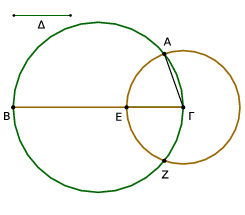
῎Ηχθω τοῦ ΑΒΓ κύκλου διάμετρος ἡ ΒΓ. εἰ μὲν οὖν ἴση ἐστὶν ἡ ΒΓ τῇ Δ, γεγονὸς ἂν εἴη τὸ ἐπιταχθέν· ἐνήρμοσται γὰρ εἰς τὸν ΑΒΓ κύκλον τῇ Δ εὐθείᾳ ἴση ἡ ΒΓ. εἰ δὲ μείζων ἐστὶν ἡ ΒΓ τῆς Δ, κείσθω τῇ Δ ἴση ἡ ΓΕ, καὶ κέντρῳ τῷ Γ διαστήματι δὲ τῷ ΓΕ κύκλος γεγράφθω ὁ ΕΑΖ, καὶ ἐπεζεύχθω ἡ ΓΑ.
᾿Επεὶ οὖν το Γ σημεῖον κέντρον ἐστὶ τοῦ ΕΑΖ κύκλου, ἴση ἐστὶν ἡ ΓΑ τῇ ΓΕ. ἀλλὰ τῇ Δ ἡ ΓΕ ἐστιν ἴση· καὶ ἡ Δ ἄρα τῇ ΓΑ ἐστιν ἴση.
Εἰς ἄρα τὸν δοθέντα κύκλον τὸν ΑΒΓ τῇ δοθείσῃ εὐθείᾳ τῇ Δ ἴση ἐνήρμοσται ἡ ΓΑ· ὅπερ ἔδει ποιῆσαι.
Εἰς τὸν δοθέντα κύκλον τῷ δοθέντι τριγώνῳ ἰσογώνιον τρίγωνον ἐγγράψαι.
῎Εστω ὁ δοθεὶς κύκλος ὁ ΑΒΓ, τὸ δὲ δοθὲν τριγωνον τὸ ΔΕΖ· δεῖ δὴ εἰς τὸν ΑΒΓ κύκλον τῷ ΔΕΖ τριγώνῳ ἰσογώνιον τρίγωνον ἐγγράψαι.
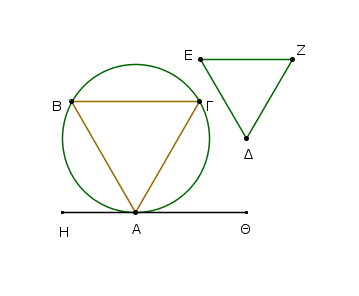
῎Ηχθω τοῦ ΑΒΓ κύκλου ἐφαπτομένη ἡ ΗΘ κατὰ τὸ Α, καὶ συνεστάτω πρὸς τῇ ΑΘ εὐθείᾳ καὶ τῷ πρὸς αὐτῇ σημείῳ τῷ Α τῇ ὑπὸ ΔΕΖ γωνίᾳ ἴση ἡ ὑπὸ ΘΑΓ, πρὸς δὲ τῇ ΑΗ εὐθείᾳ καὶ τῷ πρὸς αὐτῇ σημείῳ τῷ Α τῇ ὑπὸ ΔΖΕ [γωνίᾳ] ἴση ἡ ὑπὸ ΗΑΒ, καὶ ἐπεζεύχθω ἡ ΒΓ.
᾿Επεὶ οὖν κύκλου τοῦ ΑΒΓ ἐφάπτεταί τις εὐθεῖα ἡ ΑΘ, καὶ ἀπὸ τῆς κατὰ τὸ Α ἐπαφῆς εἰς τὸν κύκλον διῆκται εὐθεῖα ἡ ΑΓ, ἡ ἄρα ὑπὸ ΘΑΓ ἴση ἐστὶ τῇ ἐν τῷ ἐναλλὰξ τοῦ κύκλου τμήματι γωνίᾳ τῇ ὑπὸ ΑΒΓ. ἀλλ᾿ ἡ ὑπὸ ΘΑΓ τῇ ὑπὸ ΔΕΖ ἐστιν ἴση· καὶ ἡ ὑπὸ ΑΒΓ ἄρα γωνία τῇ ὑπὸ ΔΕΖ ἐστιν ἴση.
διὰ τὰ αὐτὰ δὴ καὶ ἡ ὑπὸ ΑΓΒ τῇ ὑπὸ ΔΖΕ ἐστιν ἴση· καὶ λοιπὴ ἄρα ἡ ὑπὸ ΒΑΓ λοιπῇ τῇ ὑπὸ ΕΔΖ ἐστιν ἴση [ἰσογώνιον ἄρα ἐστὶ τὸ ΑΒΓ τρίγωνον τῷ ΔΕΖ τριγώνῳ, καὶ ἐγγέγραπται εἰς τὸν ΑΒΓ κύκλον]. Εἰς τὸν δοθέντα ἄρα κύκλον τῷ δοθέντι τριγώνῳ ἰσογώνιον τρίγωνον ἐγγέγραπται· ὅπερ ἔδει ποιῆσαι.
Περὶ τὸν δοθέντα κύκλον τῷ δοθέντι τριγώνῳ ἰσογώνιον τρίγωνον περιγράψαι.
῎Εστω ὁ δοθεὶς κύκλος ὁ ΑΒΓ, τὸ δὲ δοθὲν τρίγωνον τὸ ΔΕΖ· δεῖ δὴ περὶ τὸν ΑΒΓ κύκλον τῷ ΔΕΖ τριγώνῳ ἰσογώνιον τρίγωνον περιγράψαι.
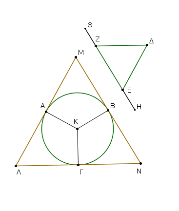
᾿Εκβεβλήσθω ἡ ΕΖ ἐφ᾿ ἑκάτερα τὰ μέρη κατὰ τὰ Η, Θ σημεῖα, καὶ εἰλήφθω τοῦ ΑΒΓ κύκλου κέντρον τὸ Κ, καὶ διήχθω, ὡς ἔτυχεν, εὐθεῖα ἡ ΚΒ, καὶ συνεστάτω πρὸς τῇ ΚΒ εὐθείᾳ καὶ τῷ πρὸς αὐτῇ σημείῳ τῷ Κ τῇ μὲν ὑπὸ ΔΕΗ γωνίᾳ ἴση ἡ ὑπὸ ΒΚΑ, τῇ δὲ ὑπὸ ΔΖΘ ἴση ἡ ὑπὸ ΒΚΓ, καὶ διὰ τῶν Α, Β, Γ σημείων ἤχθωσαν ἐφαπτόμεναι τοῦ ΑΒΓ κύκλου αἱ ΛΑΜ, ΜΒΝ, ΝΓΛ.
Καὶ ἐπεὶ ἐφάπτονται τοῦ ΑΒΓ κύκλου αἱ ΛΜ, ΜΝ, ΝΛ κατὰ τὰ Α, Β, Γ σημεῖα, ἀπὸ δὲ τοῦ Κ κέντρου ἐπὶ τὰ Α, Β, Γ σημεῖα ἐπεζευγμέναι εἰσὶν αἱ ΚΑ, ΚΒ, ΚΓ, ὀρθαὶ ἄρα εἰσὶν αἱ πρὸς τοῖς Α, Β, Γ σημείοις γωνίαι. καὶ ἐπεὶ τοῦ ΑΜΒΚ τετραπλεύρου αἱ τέσσαρες γωνίαι τέτρασιν ὀρθαῖς ἴσαι εἰσίν, ἐπειδήπερ καὶ εἰς δύο τρίγωνα διαιρεῖται τὸ ΑΜΒΚ, καί εἰσιν ὀρθαὶ αἱ ὑπὸ ΚΑΜ, ΚΒΜ γωνίαι, λοιπαὶ ἄρα αἱ ὑπὸ ΑΚΒ, ΑΜΒ δυσὶν ὀρθαῖς ἴσαι εἰσίν.
εἰσὶ δὲ καὶ αἱ ὑπὸ ΔΕΗ, ΔΕΖ δυσὶν ὀρθαῖς ἴσαι· αἱ ἄρα ὑπὸ ΑΚΒ, ΑΜΒ ταῖς ὑπὸ ΔΕΗ, ΔΕΖ ἴσαι εἰσίν, ὧν ἡ ὑπὸ ΑΚΒ τῇ ὑπὸ ΔΕΗ ἐστιν ἴση· λοιπὴ ἄρα ἡ ὑπὸ ΑΜΒ λοιπῇ τῇ ὑπὸ ΔΕΖ ἐστιν ἴση. ὁμοίως δὴ δειχθήσεται, ὅτι καὶ ἡ ὑπὸ ΛΝΒ τῇ ὑπὸ ΔΖΕ ἐστιν ἴση· καὶ λοιπὴ ἄρα ἡ ὑπὸ ΜΛΝ [λοιπῇ] τῇ ὑπὸ ΕΔΖ ἐστιν ἴση. ἰσογώνιον ἄρα ἐστὶ τὸ ΛΜΝ τρίγωνον τῷ ΔΕΖ τριγώνῳ· καὶ περιγέγραπται περὶ τὸν ΑΒΓ κύκλον.
Περὶ τὸν δοθέντα ἄρα κύκλον τῷ δοθέντι τριγώνῳ ἰσογώνιον τρίγωνον περιγέγραπται· ὅπερ ἔδει ποιῆσαι.
Εἰς τὸ δοθὲν τρίγωνον κύκλον ἐγγράψαι.
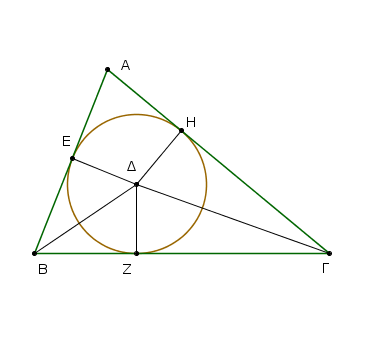
῎Εστω τὸ δοθὲν τρίγωνον τὸ ΑΒΓ· δεῖ δὴ εἰς τὸ ΑΒΓ τρίγωνον κύκλον ἐγγράψαι.
Τετμήσθωσαν αἱ ὑπὸ ΑΒΓ, ΑΓΒ γωνίαι δίχα ταῖς ΒΔ, ΓΔ εὐθείαις, καὶ συμβαλλέτωσαν ἀλλήλαις κατὰ τὸ Δ σημεῖον, καὶ ἤχθωσαν ἀπὸ τοῦ Δ ἐπὶ τὰς ΑΒ, ΒΓ, ΓΑ εὐθείας κάθετοι αἱ ΔΕ, ΔΖ, ΔΗ.
Καὶ ἐπεὶ ἴση ἐστὶν ἡ ὑπὸ ΑΒΔ γωνία τῇ ὑπὸ ΓΒΔ, ἐστὶ δὲ καὶ ὀρθὴ ἡ ὑπὸ ΒΕΔ ὀρθῇ τῇ ὑπὸ ΒΖΔ ἴση, δύο δὴ τρίγωνά ἐστι τὰ ΕΒΔ, ΖΒΔ τὰς δύο γωνίας ταῖς δυσὶ γωνίαις ἴσας ἔχοντα καὶ μίαν πλευρὰν μιᾷ πλευρᾷ ἴσην τὴν ὑποτείνουσαν ὑπὸ μίαν τῶν ἴσων γωνιῶν κοινὴν αὐτῶν τὴν ΒΔ· καὶ τὰς λοιπὰς ἄρα πλευρὰς ταῖς λοιπαῖς πλευραῖς ἴσας ἕξουσιν· ἴση ἄρα ἡ ΔΕ τῇ ΔΖ.
διὰ τὰ αὐτὰ δὴ καὶ ἡ ΔΗ τῇ ΔΖ ἐστιν ἴση. αἱ τρεῖς ἄρα εὐθεῖαι αἱ ΔΕ, ΔΖ, ΔΗ ἴσαι ἀλλήλαις εἰσίν· ὁ ἄρα κέντρῷ τῷ Δ καὶ διαστήματι ἑνὶ τῶν Ε, Ζ, Η κύκλος γραφόμενος ἥξει καὶ διὰ τῶν λοιπῶν σημείων καὶ ἐφάψεται τῶν ΑΒ, ΒΓ, ΓΑ εὐθειῶν διὰ τὸ ὀρθὰς εἶναι τὰς πρὸς τοῖς Ε, Ζ, Η σημείοις γωνίας. εἰ γὰρ τεμεῖ αὐτάς, ἔσται ἡ τῇ διαμέτρῳ τοῦ κύκλου πρὸς ὀρθὰς ἀπ᾿ ἄκρας ἀγομένη ἐντὸς πίπτουσα τοῦ κύκλου· ὅπερ ἄτοπον ἐδείχθη· οὐκ ἄρα ὁ κέντρῳ τῷ Δ διαστήματι δὲ ἑνὶ τῶν Ε, Ζ, Η γραφόμενος κύκλος τεμεῖ τὰς ΑΒ, ΒΓ, ΓΑ εὐθείας· ἐφάψεται ἄρα αὐτῶν, καὶ ἔσται ὁ κύκλος ἐγγεγραμμένος εἰς τὸ ΑΒΓ τρίγωνον. ἐγγεγράφθω ὡς ὁ ΖΗΕ.
Εἰς ἄρα τὸ δοθὲν τρίγωνον τὸ ΑΒΓ κύκλος ἐγγέγραπται ὁ ΕΖΗ· ὅπερ ἔδει ποιῆσαι.
Περὶ τὸ δοθὲν τρίγωνον κύκλον περιγράψαι.
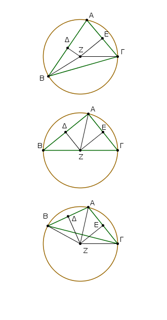
῎Εστω τὸ δοθὲν τρίγωνον τὸ ΑΒΓ· δεῖ δὲ περὶ τὸ δοθὲν τρίγωνον τὸ ΑΒΓ κύκλον περιγράψαι.
Τετμήσθωσαν αἱ ΑΒ, ΑΓ εὐθεῖαι δίχα κατὰ τὰ Δ, Ε σημεῖα, καὶ ἀπὸ τῶν Δ, Ε σημείων ταῖς ΑΒ, ΑΓ πρὸς ὀρθὰς ἤχθωσαν αἱ ΔΖ, ΕΖ· συμπεσοῦνται δὴ ἤτοι ἐντὸς τοῦ ΑΒΓ τριγώνου ἢ ἐπὶ τῆς ΒΓ εὐθείας ἢ ἐκτὸς τῆς ΒΓ.
Συμπιπτέτωσαν πρότερον ἐντὸς κατὰ τὸ Ζ, καὶ ἐπεζεύχθωσαν αἱ ΖΒ, ΖΓ, ΖΑ. καὶ ἐπεὶ ἴση ἐστὶν ἡ ΑΔ τῇ ΔΒ, κοινὴ δὲ καὶ πρὸς ὀρθὰς ἡ ΔΖ, βάσις ἄρα ἡ ΑΖ βάσει τῇ ΖΒ ἐστιν ἴση. ὁμοίως δὴ δείξομεν, ὅτι καὶ ἡ ΓΖ τῇ ΑΖ ἐστιν ἴση· ὥστε καὶ ἡ ΖΒ τῇ ΖΓ ἐστιν ἴση· αἱ τρεῖς ἄρα αἱ ΖΑ, ΖΒ, ΖΓ ἴσαι ἀλλήλαις εἰσίν. ὁ ἄρα κέντρῳ τῷ Ζ διαστήματι δὲ ἑνὶ τῶν Α, Β, Γ κύκλος γραφόμενος ἥξει καὶ διὰ τῶν λοιπῶν σημείων, καὶ ἔσται περιγεγραμμένος ὁ κύκλος περὶ τὸ ΑΒΓ τρίγωνον. περιγεγράφθω ὡς ὁ ΑΒΓ.
᾿Αλλὰ δὴ αἱ ΔΖ, ΕΖ συμπιπτέτωσαν ἐπὶ τῆς ΒΓ εὐθείας κατὰ τὸ Ζ, ὡς ἔχει ἐπὶ τῆς δευτέρας καταγραφῆς, καὶ ἐπεζεύχθω ἡ ΑΖ. ὁμοίως δὴ δείξομεν, ὅτι τὸ Ζ σημεῖον κέντρον ἐστὶ τοῦ περὶ τὸ ΑΒΓ τρίγωνον περιγραφομένου κύκλου.
᾿Αλλὰ δὴ αἱ ΔΖ, ΕΖ συμπιπτέτωσαν ἐκτὸς τοῦ ΑΒΓ τριγώνου κατὰ τὸ Ζ πάλιν, ὡς ἔχει ἐπὶ τῆς τρίτης καταγραφῆς, καί ἐπεζεύχθωσαν αἱ ΑΖ, ΒΖ, ΓΖ. καὶ ἐπεὶ πάλιν ἴση ἐστὶν ἡ ΑΔ τῇ ΔΒ, κοινὴ δὲ καὶ πρὸς ὀρθὰς ἡ ΔΖ, βάσις ἄρα ἡ ΑΖ βάσει τῇ ΒΖ ἐστιν ἴση. ὁμοίως δὴ δείξομεν, ὅτι καὶ ἡ ΓΖ τῇ ΑΖ ἐστιν ἴση· ὥστε καὶ ἡ ΒΖ τῇ ΖΓ ἐστιν ἴση· ὁ ἄρα [πάλιν] κέντρῳ τῷ Ζ διαστήματι δὲ ἑνὶ τῶν ΖΑ, ΖΒ, ΖΓ κύκλος γραφόμενος ἥξει καὶ διὰ τῶν λοιπῶν σημείων, καὶ ἔσται περιγεγραμμένος περὶ τὸ ΑΒΓ τρίγωνον.
Περὶ τὸ δοθὲν ἄρα τρίγωνον κύκλος περιγέγραπται· ὅπερ ἔδει ποιῆσαι.
Εἰς τὸν δοθέντα κύκλον τετράγωνον ἐγγράψαι.
῎Εστω ὁ δοθεὶς κύκλος ὁ ΑΒΓΔ· δεῖ δὴ εἰς τὸν ΑΒΓΔ κύκλον τετράγωνον ἐγγράψαι.
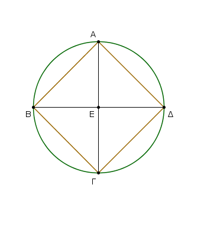
῎Ηχθωσαν τοῦ ΑΒΓΔ κύκλου δύο διάμετροι πρὸς ὀρθὰς ἀλλήλαις αἱ ΑΓ, ΒΔ, καὶ ἐπεζεύχθωσαν αἱ ΑΒ, ΒΓ, ΓΔ, ΔΑ.
Καὶ ἐπεὶ ἴση ἐστὶν ἡ ΒΕ τῇ ΕΔ· κέντρον γὰρ τὸ Ε· κοινὴ δὲ καὶ πρὸς ὀρθὰς ἡ ΕΑ, βάσις ἄρα ἡ ΑΒ βάσει τῇ ΑΔ ἴση ἐστίν.
διὰ τὰ αὐτὰ δὴ καὶ ἑκατέρα τῶν ΒΓ, ΓΔ ἑκατέρᾳ τῶν ΑΒ, ΑΔ ἴση ἐστίν· ἰσόπλευρον ἄρα ἐστὶ τὸ ΑΒΓΔ τετράπλευρον. λέγω δή, ὅτι καὶ ὀρθογώνιον.
ἐπεὶ γὰρ ἡ ΒΔ εὐθεῖα διάμετρός ἐστι τοῦ ΑΒΓΔ κύκλου, ἡμικύκλιον ἄρα ἐστὶ τὸ ΒΑΔ· ὀρθὴ ἄρα ἡ ὑπὸ ΒΑΔ γωνία.
διὰ τὰ αὐτὰ δὴ καὶ ἑκάστη τῶν ὑπὸ ΑΒΓ, ΒΓΔ, ΓΔΑ ὀρθή ἐστιν· ὀρθογώνιον ἄρα ἐστὶ τὸ ΑΒΓΔ τετράπλευρον. ἐδείχθη δὲ καὶ ἰσόπλευρον· τετράγωνον ἄρα ἐστίν. καὶ ἐγγέγραπται εἰς τὸν ΑΒΓΔ κύκλον.
Εἰς ἄρα τὸν δοθέντα κύκλον τετράγωνον ἐγγέγραπται τὸ ΑΒΓΔ· ὅπερ ἔδει ποιῆσαι.
Περὶ τὸν δοθέντα κύκλον τετράγωνον περιγράψαι.
῎Εστω ὁ δοθεὶς κύκλος ὁ ΑΒΓΔ· δεῖ δὴ περὶ τὸν ΑΒΓΔ κύκλον τετράγωνον περιγράψαι.
῎Ηχθωσαν τοῦ ΑΒΓΔ κύκλου δύο διάμετροι πρὸς ὀρθὰς ἀλλήλαις αἱ ΑΓ, ΒΔ, καὶ διὰ τῶν Α, Β, Γ, Δ σημείων ἤχθωσαν ἐφαπτόμεναι τοῦ ΑΒΓΔ κύκλου αἱ ΖΗ, ΗΘ, ΘΚ, ΚΖ. ᾿Επεὶ οὖν ἐφάπτεται ἡ ΖΗ τοῦ ΑΒΓΔ κύκλου, ἀπὸ δὲ τοῦ Ε κέντρου ἐπὶ τὴν κατὰ τὸ Α ἐπαφὴν ἐπέζευκται ἡ ΕΑ, αἱ ἄρα πρὸς τῷ Α γωνίαι ὀρθαί εἰσιν. διὰ τὰ αὐτὰ δὴ καὶ αἱ πρὸς τοῖς Β, Γ, Δ σημείοις γωνίαι ὀρθαί εἰσιν.
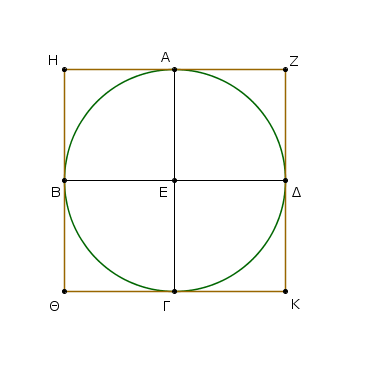
καὶ ἐπεὶ ὀρθή ἐστιν ἡ ὑπὸ ΑΕΒ γωνία, ἐστὶ δὲ ὀρθὴ καὶ ἡ ὑπὸ ΕΒΗ, παράλληλος ἄρα ἐστὶν ἡ ΗΘ τῇ ΑΓ. διὰ τὰ αὐτὰ δὴ καὶ ἡ ΑΓ τῇ ΖΚ ἐστι παράλληλος. ὥστε καὶ ἡ ΗΘ τῇ ΖΚ ἐστι παράλληλος.
ὁμοίως δὴ δείξομεν, ὅτι καὶ ἑκατέρα τῶν ΗΖ, ΘΚ τῇ ΒΕΔ ἐστι παράλληλος. παραλληλόγραμμα ἄρα ἐστὶ τὰ ΗΚ, ΗΓ, ΑΚ, ΖΒ, ΒΚ· ἴση ἄρα ἐστὶν ἡ μὲν ΗΖ τῇ ΘΚ, ἡ δὲ ΗΘ τῇ ΖΚ. καὶ ἐπεὶ ἴση ἐστὶν ἡ ΑΓ τῇ ΒΔ, ἀλλὰ καὶ ἡ μὲν ΑΓ ἑκατέρᾳ τῶν ΗΘ, ΖΚ, ἡ δὲ ΒΔ ἑκατέρᾳ τῶν ΗΖ, ΘΚ ἐστιν ἴση [καὶ ἑκατέρα ἄρα τῶν ΗΘ, ΖΚ ἑκατέρᾳ τῶν ΗΖ, ΘΚ ἐστιν ἴση], ἰσόπλευρον ἄρα ἐστὶ τὸ ΖΗΘΚ τετράπλευρον. λέγω δή, ὅτι καὶ ὀρθογώνιον.
ἐπεὶ γὰρ παραλληλόγραμμόν ἐστι τὸ ΗΒΕΑ, καί ἐστιν ὀρθὴ ἡ ὑπὸ ΑΕΒ, ὀρθὴ ἄρα καὶ ἡ ὑπὸ ΑΗΒ. ὁμοίως δὴ δείξομεν, ὅτι καὶ αἱ πρὸς τοῖς Θ, Κ, Ζ γωνίαι ὀρθαί εἰσιν. ὀρθογώνιον ἄρα ἐστὶ τὸ ΖΗΘΚ. ἐδείχθη δὲ καὶ ἰσόπλευρον· τετράγωνον ἄρα ἐστίν. καὶ περιγέγραπται περὶ τὸν ΑΒΓΔ κύκλον.
Περὶ τὸν δοθέντα ἄρα κύκλον τετράγωνον περιγέγραπται· ὅπερ ἔδει ποιῆσαι.
Εἰς τὸ δοθὲν τετράγωνον κύκλον ἐγγράψαι.
῎Εστω τὸ δοθὲν τετράγωνον τὸ ΑΒΓΔ. δεῖ δὴ εἰς τὸ ΑΒΓΔ τετράγωνον κύκλον ἐγγράψαι.
Τετμήσθω ἑκατέρα τῶν ΑΔ, ΑΒ δίχα κατὰ τὰ Ε, Ζ σημεῖα, καὶ διὰ μὲν τοῦ Ε ὁποτέρᾳ τῶν ΑΒ, ΓΔ παράλληλος ἤχθω ὁ ΕΘ, διὰ δὲ τοῦ Ζ ὁποτέρᾳ τῶν ΑΔ, ΒΓ παράλληλος ἤχθω ἡ ΖΚ·
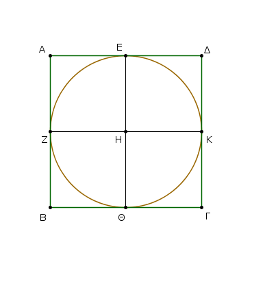
παραλληλόγραμμον ἄρα ἐστὶν ἕκαστον τῶν ΑΚ, ΚΒ, ΑΘ, ΘΔ, ΑΗ, ΗΓ, ΒΗ, ΗΔ, καὶ αἱ ἀπεναντίον αὐτῶν πλευραὶ δηλονότι ἴσαι [εἰσίν].
καὶ ἐπεὶ ἴση ἐστὶν ἡ ΑΔ τῇ ΑΒ, καί ἐστι τῆς μὲν ΑΔ ἡμίσεια ἡ ΑΕ, τῆς δὲ ΑΒ ἡμίσεια ἡ ΑΖ, ἴση ἄρα καὶ ἡ ΑΕ τῇ ΑΖ· ὥστε καὶ αἱ ἀπεναντίον· ἴση ἄρα καὶ ἡ ΖΗ τῇ ΗΕ.
ὁμοίως δὴ δείξομεν, ὅτι καὶ ἑκατέρα τῶν ΗΘ, ΗΚ ἑκατέρᾳ τῶν ΖΗ, ΗΕ ἐστιν ἴση· αἱ τέσσαρες ἄρα αἱ ΗΕ, ΗΖ, ΗΘ, ΗΚ ἴσαι ἀλλήλαις [εἰσίν].
ὁ ἄρα κέντρῳ μὲν τῷ Η διαστήματι δὲ ἑνὶ τῶν Ε, Ζ, Θ, Κ κύκλος γραφόμενος ἥξει καὶ διὰ τῶν λοιπῶν σημείων· καὶ ἐφάψεται τῶν ΑΒ, ΒΓ, ΓΔ, ΔΑ εὐθειῶν διὰ τὸ ὀρθὰς εἶναι τὰς πρὸς τοῖς Ε, Ζ, Θ, Κ γωνίας·
εἰ γὰρ τεμεῖ ὁ κύκλος τὰς ΑΒ, ΒΓ, ΓΔ, ΔΑ, ἡ τῇ διαμέτρῳ τοῦ κύκλου πρὸς ὀρθὰς ἀπ᾿ ἄκρας ἀγομένη ἐντὸς πεσεῖται τοῦ κύκλου· ὅπερ ἄτοπον ἐδείχθη.
οὐκ ἄρα ὁ κέντρῳ τῷ Η διαστήματι δὲ ἑνὶ τῶν Ε, Ζ, Θ, Κ κύκλος γραφόμενος τεμεῖ τὰς ΑΒ, ΒΓ, ΓΔ, ΔΑ εὐθείας. ἐφάψεται ἄρα αὐτῶν καὶ ἔσται ἐγγεγραμμένος εἰς τὸ ΑΒΓΔ τετράγωνον.
Εἰς ἄρα τὸ δοθὲν τετράγωνον κύκλος ἐγγέγραπται· ὅπερ ἔδει ποιῆσαι.
Περὶ τὸ δοθὲν τετράγωνον κύκλον περιγράψαι.
῎Εστω τὸ δοθὲν τετράγωνον τὸ ΑΒΓΔ· δεῖ δὴ περὶ τὸ ΑΒΓΔ τετράγωνον κύκλον περιγράψαι.
᾿Επιζευχθεῖσαι γὰρ αἱ ΑΓ, ΒΔ τεμνέτωσαν ἀλλήλας κατὰ τὸ Ε.
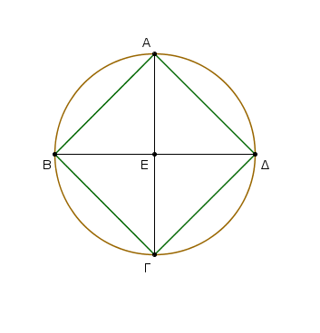
Καὶ ἐπεὶ ἴση ἐστὶν ἡ ΔΑ τῇ ΑΒ, κοινὴ δὲ ἡ ΑΓ, δύο δὴ αἱ ΔΑ, ΑΓ δυσὶ ταῖς ΒΑ, ΑΓ ἴσαι εἰσίν· καὶ βάσις ἡ ΔΓ βάσει τῇ ΒΓ ἴση· γωνία ἄρα ἡ ὑπὸ ΔΑΓ γωνίᾳ τῇ ὑπὸ ΒΑΓ ἴση ἐστίν· ἡ ἄρα ὑπὸ ΔΑΒ γωνία δίχα τέτμηται ὑπὸ τῆς ΑΓ.
ὁμοίως δὴ δείξομεν, ὅτι καὶ ἑκάστη τῶν ὑπὸ ΑΒΓ, ΒΓΔ, ΓΔΑ δίχα τέτμηται ὑπὸ τῶν ΑΓ, ΔΒ εὐθειῶν. καὶ ἐπεὶ ἴση ἐστὶν ἡ ὑπὸ ΔΑΒ γωνία τῇ ὑπὸ ΑΒΓ, καί ἐστι τῆς μὲν ὑπὸ ΔΑΒ ἡμίσεια ἡ ὑπὸ ΕΑΒ, τῆς δὲ ὑπὸ ΑΒΓ ἡμίσεια ἡ ὑπὸ ΕΒΑ, καὶ ἡ ὑπὸ ΕΑΒ ἄρα τῇ ὑπὸ ΕΒΑ ἐστιν ἴση· ὥστε καὶ πλευρὰ ἡ ΕΑ τῇ ΕΒ ἐστιν ἴση.
ὁμοίως δὴ δείξομεν, ὅτι καὶ ἑκατέρα τῶν ΕΑ, ΕΒ [εὐθειῶν] ἑκατέρᾳ τῶν ΕΓ, ΕΔ ἴση ἐστίν. αἱ τέσσαρες ἄρα αἱ ΕΑ, ΕΒ, ΕΓ, ΕΔ ἴσαι ἀλλήλαις εἰσίν.
ὁ ἄρα κέντρῳ τῷ Ε καὶ διαστήματι ἑνὶ τῶν Α, Β, Γ, Δ κύκλος γραφόμενος ἥξει καὶ διὰ τῶν λοιπῶν σημείων καὶ ἔσται περιγεγραμμένος περὶ τὸ ΑΒΓΔ τετράγωνον. περιγεγράφθω ὡς ὁ ΑΒΓΔ.
Περὶ τὸ δοθὲν ἄρα τετράγωνον κύκλος περιγέγραπται· ὅπερ ἔδει ποιῆσαι.
᾿Ισοσκελὲς τρίγωνον συστήσασθαι ἔχον ἑκατέραν τῶν πρὸς τῇ βάσει γωνιῶν διπλασίονα τῆς λοιπῆς.
᾿Εκκείσθω τις εὐθεῖα ἡ ΑΒ, καὶ τετμήσθω κατὰ τὸ Γ σημεῖον, ὥστε τὸ ὑπὸ τῶν ΑΒ, ΒΓ περιεχόμενον ὀρθογώνιον ἴσον εἶναι τῷ ἀπὸ τῆς ΓΑ τετραγώνῳ· καὶ κέντρῳ τῷ Α καὶ διαστήματι τῷ ΑΒ κύκλος γεγράφθω ὁ ΒΔΕ, καὶ ἐνηρμόσθω εἰς τὸν ΒΔΕ κύκλον τῇ ΑΓ εὐθείᾳ μὴ μείζονι οὔσῃ τῆς τοῦ ΒΔΕ κύκλου διαμέτρου ἴση εὐθεῖα ἡ ΒΔ· καὶ ἐπεζεύχθωσαν αἱ ΑΔ, ΔΓ, καὶ περιγεγράφθω περὶ τὸ ΑΓΔ τρίγωνον κύκλος ὁ ΑΓΔ.
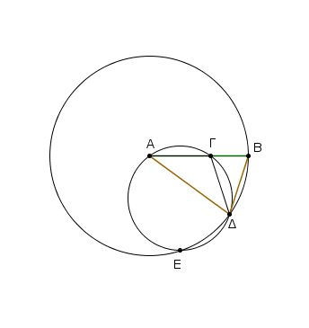
Καὶ ἐπεὶ τὸ ὑπὸ τῶν ΑΒ, ΒΓ ἴσον ἐστὶ τῷ ἀπὸ τῆς ΑΓ, ἴση δὲ ἡ ΑΓ τῇ ΒΔ, τὸ ἄρα ὑπὸ τῶν ΑΒ, ΒΓ ἴσον ἐστὶ τῷ ἀπὸ τῆς ΒΔ.
καὶ ἐπεὶ κύκλου τοῦ ΑΓΔ εἴληπταί τι σημεῖον ἐκτὸς τὸ Β, καὶ ἀπὸ τοῦ Β πρὸς τὸν ΑΓΔ κύκλον προσπεπτώκασι δύο εὐθεῖαι αἱ ΒΑ, ΒΔ, καὶ ἡ μὲν αὐτῶν τέμνει, ἡ δὲ προσπίπτει, καί ἐστι τὸ ὑπὸ τῶν ΑΒ, ΒΓ ἴσον τῷ ἀπὸ τῆς ΒΔ, ἡ ΒΔ ἄρα ἐφάπτεται τοῦ ΑΓΔ κύκλου.
ἐπεὶ οὖν ἐφάπτεται μὲν ἡ ΒΔ, ἀπὸ δὲ τῆς κατὰ τὸ Δ ἐπαφῆς διῆκται ἡ ΔΓ, ἡ ἄρα ὑπὸ ΒΔΓ γωνία ἴση ἐστὶ τῇ ἐν τῷ ἐναλλὰξ τοῦ κύκλου τμήματι γωνίᾳ τῇ ὑπὸ ΔΑΓ.
ἐπεὶ οὖν ἴση ἐστὶν ἡ ὑπὸ ΒΔΓ τῇ ὑπὸ ΔΑΓ, κοινὴ προσκείσθω ἡ ὑπὸ ΓΔΑ· ὅλη ἄρα ἡ ὑπὸ ΒΔΑ ἴση ἐστὶ δυσὶ ταῖς ὑπὸ ΓΔΑ, ΔΑΓ. ἀλλὰ ταῖς ὑπὸ ΓΔΑ, ΔΑΓ ἴση ἐστὶν ἡ ἐκτὸς ἡ ὑπὸ ΒΓΔ· καὶ ἡ ὑπὸ ΒΔΑ ἄρα ἴση ἐστὶ τῇ ὑπὸ ΒΓΔ.
ἀλλὰ ἡ ὑπὸ ΒΔΑ τῇ ὑπὸ ΓΒΔ ἐστιν ἴση, ἐπεὶ καὶ πλευρὰ ἡ ΑΔ τῇ ΑΒ ἐστιν ἴση· ὥστε καὶ ἡ ὑπὸ ΔΒΑ τῇ ὑπὸ ΒΓΔ ἐστιν ἴση.
αἱ τρεῖς ἄρα αἱ ὑπὸ ΒΔΑ, ΔΒΑ, ΒΓΔ ἴσαι ἀλλήλαις εἰσίν. καὶ ἐπεὶ ἴση ἐστὶν ἡ ὑπὸ ΔΒΓ γωνία τῇ ὑπὸ ΒΓΔ, ἴση ἐστὶ καὶ πλευρὰ ἡ ΒΔ πλευρᾷ τῇ ΔΓ. ἀλλὰ ἡ ΒΔ τῇ ΓΑ ὑπόκειται ἴση· καὶ ἡ ΓΑ ἄρα τῇ ΓΔ ἐστιν ἴση· ὥστε καὶ γωνία ἡ ὑπὸ ΓΔΑ γωνίᾳ τῇ ὑπὸ ΔΑΓ ἐστιν ἴση· αἱ ἄρα ὑπὸ ΓΔΑ, ΔΑΓ τῆς ὑπὸ ΔΑΓ εἰσι διπλασίους.
ἴση δὲ ἡ ὑπὸ ΒΓΔ ταῖς ὑπὸ ΓΔΑ, ΔΑΓ· καὶ ἡ ὑπὸ ΒΓΔ ἄρα τῆς ὑπὸ ΓΑΔ ἐστι διπλῆ. ἴση δὲ ἡ ὑπὸ ΒΓΔ ἑκατέρᾳ τῶν ὑπὸ ΒΔΑ, ΔΒΑ· καὶ ἑκατέρα ἄρα τῶν ὑπὸ ΒΔΑ, ΔΒΑ τῆς ὑπὸ ΔΑΒ ἐστι διπλῆ.
᾿Ισοσκελὲς ἄρα τρίγωνον συνέσταται τὸ ΑΒΔ ἔχον ἑκατέραν τῶν πρὸς τῇ ΔΒ βάσει γωνιῶν διπλασίονα τῆς λοιπῆς· ὅπερ ἔδει ποιῆσαι.
Εἰς τὸν δοθέντα κύκλον πεντάγωνον ἰσόπλευρόν τε καὶ ἰσογώνιον ἐγγράψαι.
῎Εστω ὁ δοθεὶς κύκλος ὁ ΑΒΓΔΕ· δεῖ δὴ εἰς τὸν ΑΒΓΔΕ κύκλον πεντάγωνον ἰσόπλευρόν τε καὶ ἰσογώνιον ἐγγράψαι.
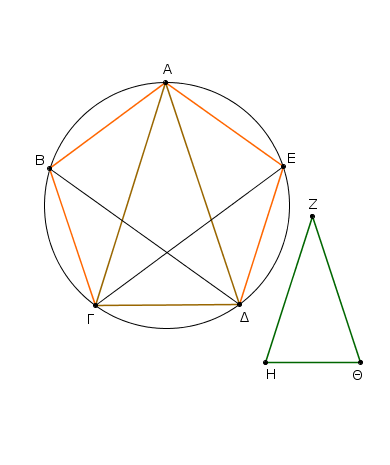
᾿Εκκείσθω τρίγωνον ἰσοσκελὲς τὸ ΖΗΘ διπλασίονα ἔχον ἑκατέραν τῶν πρὸς τοῖς Η, Θ γωνιῶν τῆς πρὸς τῷ Ζ, καὶ ἐγγεγράφθω εἰς τὸν ΑΒΓΔΕ κύκλον τῷ ΖΗΘ τριγώνῳ ἰσογώνιον τρίγωνον τὸ ΑΓΔ, ὥστε τῇ μὲν πρὸς τῷ Ζ γωνίᾳ ἴσην εἶναι τὴν ὑπὸ ΓΑΔ, ἑκατέραν δὲ τῶν πρὸς τοῖς Η, Θ ἴσην ἑκατέρᾳ τῶν ὑπὸ ΑΓΔ, ΓΔΑ· καὶ ἑκατέρα ἄρα τῶν ὑπὸ ΑΓΔ, ΓΔΑ τῆς ὑπὸ ΓΑΔ ἐστι διπλῆ. τετμήσθω δὴ ἑκατέρα τῶν ὑπὸ ΑΓΔ, ΓΔΑ δίχα ὑπὸ ἑκατέρας τῶν ΓΕ, ΔΒ εὐθειῶν, καὶ ἐπεζεύχθωσαν αἱ ΑΒ, ΒΓ, ΔΕ, ΕΑ.
᾿Επεὶ οὖν ἑκατέρα τῶν ὑπὸ ΑΓΔ, ΓΔΑ γωνιῶν διπλασίων ἐστὶ τῆς ὑπὸ ΓΑΔ, καὶ τετμημέναι εἰσὶ δίχα ὑπὸ τῶν ΓΕ, ΔΒ εὐθειῶν, αἱ πέντε ἄρα γωνίαι αἱ ὑπὸ ΔΑΓ, ΑΓΕ, ΕΓΔ, ΓΔΒ, ΒΔΑ ἴσαι ἀλλήλαις εἰσίν. αἱ δὲ ἴσαι γωνίαι ἐπὶ ἴσων περιφερειῶν βεβήκασιν· αἱ πέντε ἄρα περιφέρειαι αἱ ΑΒ, ΒΓ, ΓΔ, ΔΕ, ΕΑ ἴσαι ἀλλήλαις εἰσίν. ὑπὸ δὲ τὰς ἴσας περιφερείας ἴσαι εὐθεῖαι ὑποτείνουσιν· αἱ πέντε ἄρα εὐθεῖαι αἱ ΑΒ, ΒΓ, ΓΔ, ΔΕ, ΕΑ ἴσαι ἀλλήλαις εἰσίν· ἰσόπλευρον ἄρα ἐστὶ τὸ ΑΒΓΔΕ πεντάγωνον.
λέγω δή, ὅτι καὶ ἰσογώνιον. ἐπεὶ γὰρ ἡ ΑΒ περιφέρεια τῇ ΔΕ περιφερείᾳ ἐστὶν ἴση, κοινὴ προσκείσθω ἡ ΒΓΔ· ὅλη ἄρα ἡ ΑΒΓΔ περιφέρια ὅλῃ τῇ ΕΔΓΒ περιφερείᾳ ἐστὶν ἴση. καὶ βέβηκεν ἐπὶ μὲν τῆς ΑΒΓΔ περιφερείας γωνία ἡ ὑπὸ ΑΕΔ, ἐπὶ δὲ τῆς ΕΔΓΒ περιφερείας γωνία ἡ ὑπὸ ΒΑΕ· καὶ ἡ ὑπὸ ΒΑΕ ἄρα γωνία τῇ ὑπὸ ΑΕΔ ἐστιν ἴση. διὰ τὰ αὐτὰ δὴ καὶ ἑκάστη τῶν ὑπὸ ΑΒΓ, ΒΓΔ, ΓΔΕ γωνιῶν ἑκατέρᾳ τῶν ὑπὸ ΒΑΕ, ΑΕΔ ἐστιν ἴση· ἰσογώνιον ἄρα ἐστὶ τὸ ΑΒΓΔΕ πεντάγωνον. ἐδείχθη δὲ καὶ ἰσόπλευρον.
Εἰς ἄρα τὸν δοθέντα κύκλον πεντάγωνον ἰσόπλευρόν τε καὶ ἰσογώνιον ἐγγέγραπται· ὅπερ ἔδει ποιῆσαι.
Περὶ τὸν δοθέντα κύκλον πεντάγωνον ἰσόπλευρόν τε καὶ ἰσογώνιον περιγράψαι.
῎Εστω ὁ δοθεὶς κύκλος ὁ ΑΒΓΔΕ· δεῖ δὲ περὶ τὸν ΑΒΓΔΕ κύκλον πεντάγωνον ἰσόπλευρόν τε καὶ ἰσογώνιον περιγράψαι.
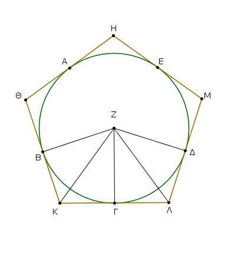
Νενοήσθω τοῦ ἐγγεγραμμένου πενταγώνου τῶν γωνιῶν σημεῖα τὰ Α, Β, Γ, Δ, Ε, ὥστε ἴσας εἶναι τὰς ΑΒ, ΒΓ, ΓΔ, ΔΕ, ΕΑ περιφερείας· καὶ διὰ τῶν Α, Β, Γ, Δ, Ε ἤχθωσαν τοῦ κύκλου ἐφαπτόμεναι αἱ ΗΘ, ΘΚ, ΚΛ, ΛΜ, ΜΗ, καὶ εἰλήφθω τοῦ ΑΒΓΔΕ κύκλου κέντρον τὸ Ζ, καὶ ἐπεζεύχθωσαν αἱ ΖΒ, ΖΚ, ΖΓ, ΖΛ, ΖΔ.
Καὶ ἐπεὶ ἡ μὲν ΚΛ εὐθεῖα ἐφάπτεται τοῦ ΑΒΓΔΕ κατὰ τὸ Γ, ἀπὸ δὲ τοῦ Ζ κέντρου ἐπὶ τὴν κατὰ τὸ Γ ἐπαφὴν ἐπέζευκται ἡ ΖΓ, ἡ ΖΓ ἄρα κάθετός ἐστιν ἐπὶ τὴν ΚΛ· ὀρθὴ ἄρα ἐστὶν ἑκατέρα τῶν πρὸς τῷ Γ γωνιῶν. διὰ τὰ αὐτὰ δὴ καὶ αἱ πρὸς τοῖς Β, Δ σημείοις γωνίαι ὀρθαί εἰσιν.
καὶ ἐπεὶ ὀρθή ἐστιν ἡ ὑπὸ ΖΓΚ γωνία, τὸ ἄρα ἀπὸ τῆς ΖΚ ἴσον ἐστὶ τοῖς ἀπὸ τῶν ΖΓ, ΓΚ. διὰ τὰ αὐτὰ δὴ καὶ τοῖς ἀπὸ τῶν ΖΒ, ΒΚ ἴσον ἐστὶ τὸ ἀπὸ τῆς ΖΚ· ὥστε τὰ ἀπὸ τῶν ΖΓ, ΓΚ τοῖς ἀπὸ τῶν ΖΒ, ΒΚ ἐστιν ἴσα, ὧν τὸ ἀπὸ τῆς ΖΓ τῷ ἀπὸ τῆς ΖΒ ἐστιν ἴσον· λοιπὸν ἄρα τὸ ἀπὸ τῆς ΓΚ τῷ ἀπὸ τῆς ΒΚ ἐστιν ἴσον. ἴση ἄρα ἡ ΒΚ τῇ ΓΚ.
καὶ ἐπεὶ ἴση ἐστὶν ἡ ΖΒ τῇ ΖΓ, καὶ κοινὴ ἡ ΖΚ, δύο δὴ αἱ ΒΖ, ΖΚ δυσὶ ταῖς ΓΖ, ΖΚ ἴσαι εἰσίν· καὶ βάσις ἡ ΒΚ βάσει τῇ ΓΚ [ἐστιν] ἴση· γωνία ἄρα ἡ μὲν ὑπὸ ΒΖΚ [γωνίᾳ] τῇ ὑπὸ ΚΖΓ ἐστιν ἴση· ἡ δὲ ὑπὸ ΒΚΖ τῇ ὑπὸ ΖΚΓ· διπλῆ ἄρα ἡ μὲν ὑπὸ ΒΖΓ τῆς ὑπὸ ΚΖΓ, ἡ δὲ ὑπὸ ΒΚΓ τῆς ὑπὸ ΖΚΓ.
διὰ τὰ αὐτὰ δὴ καὶ ἡ μὲν ὑπὸ ΓΖΔ τῆς ὑπὸ ΓΖΛ ἐστι διπλῆ, ἡ δὲ ὑπὸ ΔΛΓ τῆς ὑπὸ ΖΛΓ. καὶ ἐπεὶ ἴση ἐστὶν ἡ ΒΓ περιφέρεια τῇ ΓΔ, ἴση ἐστὶ καὶ γωνία ἡ ὑπὸ ΒΖΓ τῇ ὑπὸ ΓΖΔ. καί ἐστιν ἡ μὲν ὑπὸ ΒΖΓ τῆς ὑπὸ ΚΖΓ διπλῆ, ἡ δὲ ὑπὸ ΔΖΓ τῆς ὑπὸ ΛΖΓ· ἴση ἄρα καὶ ἡ ὑπὸ ΚΖΓ τῇ ὑπὸ ΛΖΓ·
ἐστὶ δὲ καὶ ἡ ὑπὸ ΖΓΚ γωνία τῇ ὑπὸ ΖΓΛ ἴση. δύο δὴ τρίγωνά ἐστι τὰ ΖΚΓ, ΖΛΓ τὰς δύο γωνίας ταῖς δυσὶ γωνίαις ἴσας ἔχοντα καὶ μίαν πλευρὰν μιᾷ πλευρᾷ ἴσην κοινὴν αὐτῶν τὴν ΖΓ· καὶ τὰς λοιπὰς ἄρα πλευρὰς ταῖς λοιπαῖς πλευραῖς ἴσας ἕξει καὶ τὴν λοιπὴν γωνίαν τῇ λοιπῇ γωνίᾳ· ἴση ἄρα ἡ μὲν ΚΓ εὐθεῖα τῇ ΓΛ, ἡ δὲ ὑπὸ ΖΚΓ γωνία τῇ ὑπὸ ΖΛΓ. καὶ ἐπεὶ ἴση ἐστὶν ἡ ΚΓ τῇ ΓΛ, διπλῆ ἄρα ἡ ΚΛ τῆς ΚΓ. διὰ τὰ αὐτα δὴ δειχθήσεται καὶ ἡ ΘΚ τῆς ΒΚ διπλῆ. καί ἐστιν ἡ ΒΚ τῇ ΚΓ ἴση· καὶ ἡ ΘΚ ἄρα τῇ ΚΛ ἐστιν ἴση. ὁμοίως δὴ δειχθήσεται καὶ ἑκάστη τῶν ΘΗ, ΗΜ, ΜΛ ἑκατέρᾳ τῶν ΘΚ, ΚΛ ἴση· ἰσόπλευρον ἄρα ἐστὶ τὸ ΗΘΚΛΜ πεντάγωνον.
λέγω δή, ὅτι καὶ ἰσογώνιον. ἐπεὶ γὰρ ἴση ἐστὶν ἡ ὑπὸ ΖΚΓ γωνία τῇ ὑπὸ ΖΛΓ, καὶ ἐδείχθη τῆς μὲν ὑπὸ ΖΚΓ διπλῆ ἡ ὑπὸ ΘΚΛ, τῆς δὲ ὑπὸ ΖΛΓ διπλῆ ἡ ὑπὸ ΚΛΜ, καὶ ἡ ὑπὸ ΘΚΛ ἄρα τῇ ὑπὸ ΚΛΜ ἐστιν ἴση.
ὁμοίως δὴ δειχθήσεται καὶ ἑκάστη τῶν ὑπὸ ΚΘΗ, ΘΗΜ, ΗΜΛ ἑκατέρᾳ τῶν ὑπὸ ΘΚΛ, ΚΛΜ ἴση· αἱ πέντε ἄρα γωνίαι αἱ ὑπὸ ΗΘΚ, ΘΚΛ, ΚΛΜ, ΛΜΗ, ΜΗΘ ἴσαι ἀλλήλαις εἰσίν. ἰσογώνιον ἄρα ἐστὶ τὸ ΗΘΚΛΜ πεντάγωνον. ἐδείχθη δὲ καὶ ἰσόπλευρον, καὶ περιγέγραπται περὶ τὸν ΑΒΓΔΕ κύκλον.
[Περὶ τὸν δοθέντα ἄρα κύκλον πεντάγωνον ἰσόπλευρόν τε καὶ ἰσογώνιον περιγέγραπται]· ὅπερ ἔδει ποιῆσαι.
Εἰς τὸ δοθὲν πεντάγωνον, ὅ ἐστιν ἰσόπλευρόν τε καὶ ἰσογώνιον, κύκλον ἐγγράψαι.
῎Εστω τὸ δοθὲν πεντάγωνον ἰσόπλευρόν τε καὶ ἰσογώνιον τὸ ΑΒΓΔΕ· δεῖ δὴ εἰς τὸ ΑΒΓΔΕ πεντάγωνον κύκλον ἐγγράψαι.
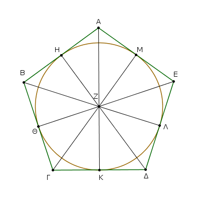
Τετμήσθω γὰρ ἑκατέρα τῶν ὑπὸ ΒΓΔ, ΓΔΕ γωνιῶν δίχα ὑπὸ ἑκατέρας τῶν ΓΖ, ΔΖ εὐθειῶν· καὶ ἀπὸ τοῦ Ζ σημείου, καθ᾿ ὃ συμβάλλουσιν ἀλλήλαις αἱ ΓΖ, ΔΖ εὐθεῖαι, ἐπεζεύχθωσαν αἱ ΖΒ, ΖΑ, ΖΕ εὐθεῖαι.
καὶ ἐπεὶ ἴση ἐστὶν ἡ ΒΓ τῇ ΓΔ, κοινὴ δὲ ἡ ΓΖ, δύο δὴ αἱ ΒΓ, ΓΖ δυσὶ ταῖς ΔΓ, ΓΖ ἴσαι εἰσίν· καὶ γωνία ἡ ὑπὸ ΒΓΖ γωνίᾳ τῇ ὑπὸ ΔΓΖ [ἐστιν] ἴση· βάσις ἄρα ἡ ΒΖ βάσει τῇ ΔΖ ἐστιν ἴση, καὶ τὸ ΒΓΖ τρίγωνον τῷ ΔΓΖ τριγώνῳ ἐστιν ἴσον, καὶ αἱ λοιπαὶ γωνίαι ταῖς λοιπαῖς γωνίαις ἴσαι ἔσονται, ὑφ᾿ ἃς αἱ ἴσαι πλευραὶ ὑποτείνουσιν· ἴση ἄρα ἡ ὑπὸ ΓΒΖ γωνία τῇ ὑπὸ ΓΔΖ.
καὶ ἐπεὶ διπλῆ ἐστιν ἡ ὑπὸ ΓΔΕ τῆς ὑπὸ ΓΔΖ, ἴση δὲ ἡ μὲν ὑπὸ ΓΔΕ τῇ ὑπὸ ΑΒΓ, ἡ δὲ ὑπὸ ΓΔΖ τῇ ὑπὸ ΓΒΖ, καὶ ἡ ὑπὸ ΓΒΑ ἄρα τῆς ὑπὸ ΓΒΖ ἐστι διπλῆ· ἴση ἄρα ἡ ὑπὸ ΑΒΖ γωνία τῇ ὑπὸ ΖΒΓ· ἡ ἄρα ὑπὸ ΑΒΓ γωνία δίχα τέτμηται ὑπὸ τῆς ΒΖ εὐθείας.
ὁμοίως δὴ δειχθήσεται, ὅτι καὶ ἑκατέρα τῶν ὑπὸ ΒΑΕ, ΑΕΔ δίχα τέτμηται ὑπὸ ἑκατέρας τῶν ΖΑ, ΖΕ εὐθειῶν.
ἤχθωσαν δὴ ἀπὸ τοῦ Ζ σημείου ἐπὶ τὰς ΑΒ, ΒΓ, ΓΔ, ΔΕ, ΕΑ εὐθείας κάθετοι αἱ ΖΗ, ΖΘ, ΖΚ, ΖΛ, ΖΜ. καὶ ἐπεὶ ἴση ἐστὶν ἡ ὑπὸ ΘΓΖ γωνία τῇ ὑπὸ ΚΓΖ, ἐστὶ δὲ καὶ ὀρθὴ ἡ ὑπὸ ΖΘΓ [ὀρθῇ] τῇ ὑπὸ ΖΚΓ ἴση, δύο δὴ τρίγωνά ἐστι τὰ ΖΘΓ, ΖΚΓ τὰς δύο γωνίας δυσὶ γωνίαις ἴσας ἔχοντα καὶ μίαν πλευρὰν μιᾷ πλευρᾷ ἴσην κοινὴν αὐτῶν τὴν ΖΓ ὑποτείνουσαν ὑπὸ μίαν τῶν ἴσων γωνιῶν· καὶ τὰς λοιπὰς ἄρα πλευρὰς ταῖς λοιπαῖς πλευραῖς ἴσας ἕξει· ἴση ἄρα ἡ ΖΘ κάθετος τῂ ΖΚ καθέτῳ.
ὁμοίως δὴ δειχθήσεται, ὅτι καὶ ἑκάστη τῶν ΖΛ, ΖΜ, ΖΗ ἑκατέρᾳ τῶν ΖΘ, ΖΚ ἴση ἐστίν· αἱ πέντε ἄρα εὐθεῖαι αἱ ΖΗ, ΖΘ, ΖΚ, ΖΛ, ΖΜ ἴσαι ἀλλήλαις εἰσίν.
ὁ ἄρα κέντρῳ τῷ Ζ διαστήματι δὲ ἑνὶ τῶν Η, Θ, Κ, Λ, Μ κύκλος γραφόμενος ἥξει καὶ διὰ τῶν λοιπῶν σημείων καὶ ἐφάψεται τῶν ΑΒ, ΒΓ, ΓΔ, ΔΕ, ΕΑ εὐθειῶν διὰ τὸ ὀρθὰς εἶναι τὰς πρὸς τοῖς Η, Θ, Κ, Λ, Μ σημείοις γωνίας.
εἰ γὰρ οὐκ ἐφάψεται αὐτῶν, ἀλλὰ τεμεῖ αὐτάς, συμβήσεται τὴν τῇ διαμέτρῳ τοῦ κύκλου πρὸς ὀρθὰς ἀπ᾿ ἄκρας ἀγομένην ἐντὸς πίπτειν τοῦ κύκλου· ὅπερ ἄτοπον ἐδείχθη.
οὐκ ἄρα ὁ κέντρῳ τῷ Ζ διαστήματι δὲ ἑνὶ τῶν Η, Θ, Κ, Λ, Μ σημείων γραφόμενος κύκλος τεμεῖ τὰς ΑΒ, ΒΓ, ΓΔ, ΔΕ, ΕΑ εὐθείας· ἐφάψεται ἄρα αὐτῶν. γεγράφθω ὡς ὁ ΗΘΚΛΜ.
Εἰς ἄρα τὸ δοθὲν πεντάγωνον, ὅ ἐστιν ἰσόπλευρόν τε καὶ ἰσογώνιον, κύκλος ἐγγέγραπται· ὅπερ ἔδει ποιῆσαι.
Περὶ τὸ δοθὲν πεντάγωνον, ὅ ἐστιν ἰσόπλευρόν τε καὶ ἰσογώνιον, κύκλον περιγράψαι.
῎Εστω τὸ δοθὲν πεντάγωνον, ὅ ἐστιν ἰσόπλευρόν τε καὶ
ἰσογώνιον, τὸ ΑΒΓΔΕ· δεῖ δὴ περὶ τὸ ΑΒΓΔΕ πεντάγωνον κύκλον περιγράψαι.
Τετμήσθω δὴ ἑκατέρα τῶν ὑπὸ ΒΓΔ, ΓΔΕ γωνιῶν δίχα ὑπὸ ἑκατέρας τῶν ΓΖ, ΔΖ, καὶ ἀπὸ τοῦ Ζ σημείου, καθ᾿ ὃ συμβάλλουσιν αἱ εὐθεῖαι, ἐπὶ τὰ Β, Α, Ε σημεῖα ἐπεζεύχθωσαν εὐθεῖαι αἱ ΖΒ, ΖΑ, ΖΕ.
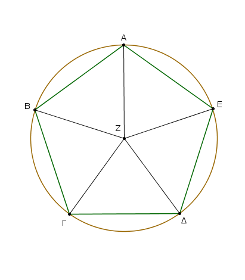
ὁμοίως δὴ τῷ πρὸ τούτου δειχθήσεται, ὅτι καὶ ἑκάστη τῶν ὑπὸ ΓΒΑ, ΒΑΕ, ΑΕΔ γωνιῶν δίχα τέτμηται ὑπὸ ἑκάστης τῶν ΖΒ, ΖΑ, ΖΕ εὐθειῶν. καὶ ἐπεὶ ἴση ἐστὶν ἡ ὑπὸ ΒΓΔ γωνία τῇ ὑπὸ ΓΔΕ, καί ἐστι τῆς μὲν ὑπὸ ΒΓΔ ἡμίσεια ἡ ὑπὸ ΖΓΔ, τῆς δὲ ὑπὸ ΓΔΕ ἡμίσεια ἡ ὑπὸ ΓΔΖ, καὶ ἡ ὑπὸ ΖΓΔ ἄρα τῇ ὑπὸ ΖΔΓ ἐστιν ἴση· ὥστε καὶ πλευρὰ ἡ ΖΓ πλευρᾷ τῇ ΖΔ ἐστιν ἴση.
ὁμοίως δὴ δειχθήσεται, ὅτι καὶ ἑκάστη τῶν ΖΒ, ΖΑ, ΖΕ ἑκατέρᾳ τῶν ΖΓ, ΖΔ ἐστιν ἴση· αἱ πέντε ἄρα εὐθεῖαι αἱ ΖΑ, ΖΒ, ΖΓ, ΖΔ, ΖΕ ἴσαι ἀλλήλαις εἰσίν. ὀ ἄρα κέντρῳ τῷ Ζ καὶ διαστήματι ἑνὶ τῶν ΖΑ, ΖΒ, ΖΓ, ΖΔ, ΖΕ κύκλος γραφόμενος ἥξει καὶ διὰ τῶν λοιπῶν σημείων καὶ ἔσται περιγεγραμμένος. περιγεγράφθω καὶ ἔστω ὁ ΑΒΓΔΕ.
Περὶ ἄρα τὸ δοθὲν πεντάγωνον, ὅ ἐστιν ἰσόπλευρόν τε καὶ ἰσογώνιον, κύκλος περιγέγραπται· ὅπερ ἔδει ποιῆσαι.
Εἰς τὸν δοθέντα κύκλον ἑξάγωνον ἰσόπλευρόν τε καὶ ἰσογώνιον ἐγγράψαι.
῎Εστω ὁ δοθεὶς κύκλος ὁ ΑΒΓΔΕΖ· δεῖ δὴ εἰς τὸν ΑΒΓΔΕΖ κύκλον ἑξάγωνον ἰσόπλευρόν τε καὶ ἰσογώνιον ἐγγράψαι.
῎Ηχθω τοῦ ΑΒΓΔΕΖ κύκλου διάμετρος ἡ ΑΔ, καὶ εἰλήφθω τὸ κέντρον τοῦ κύκλου τὸ Η, καὶ κέντρῳ μὲν τῷ Δ διαστήματι δὲ τῷ ΔΗ κύκλος γεγράφθω ὁ ΕΗΓΘ, καὶ ἐπιζευχθεῖσαι αἱ ΕΗ, ΓΗ διήχθωσαν ἐπὶ τὰ Β, Ζ σημεῖα, καὶ ἐπεζεύχθωσαν αἱ ΑΒ, ΒΓ, ΓΔ, ΔΕ, ΕΖ, ΖΑ· λέγω, ὅτι τὸ ΑΒΓΔΕΖ ἑξάγωνον ἰσόπλευρόν τέ ἐστι καὶ ἰσογώνιον.
᾿Επεὶ γὰρ τὸ Η σημεῖον κέντρον ἐστὶ τοῦ ΑΒΓΔΕΖ κύκλου, ἴση ἐστὶν ἡ ΗΕ τῇ ΗΔ. πάλιν, ἐπεὶ τὸ Δ σημεῖον κέντρον ἐστὶ τοῦ ΗΓΘ κύκλου, ἴση ἐστὶν ἡ ΔΕ τῇ ΔΗ. ἀλλ᾿ ἡ ΗΕ τῇ ΗΔ ἐδείχθη ἴση· καὶ ἡ ΗΕ ἄρα τῇ ΕΔ ἴση ἐστίν· ἰσόπλευρον ἄρα ἐστὶ τὸ ΕΗΔ τρίγωνον· καὶ αἱ τρεῖς ἄρα αὐτοῦ γωνίαι αἱ ὑπὸ ΕΗΔ, ΗΔΕ, ΔΕΗ ἴσαι ἀλλήλαις εἰσίν, ἐπειδήπερ τῶν ἰσοσκελῶν τριγώνων αἱ πρὸς τῇ βάσει γωνίαι ἴσαι ἀλλήλαις εἰσίν· καί εἰσιν αἱ τρεῖς τοῦ τριγώνου γωνίαι δυσὶν ὀρθαῖς ἴσαι· ἡ ἄρα ὑπὸ ΕΗΔ γωνία τρίτον ἐστὶ δύο ὀρθῶν. ὁμοίως δὴ δειχθήσεται καὶ ἡ ὑπὸ ΔΗΓ τρίτον δύο ὀρθῶν.
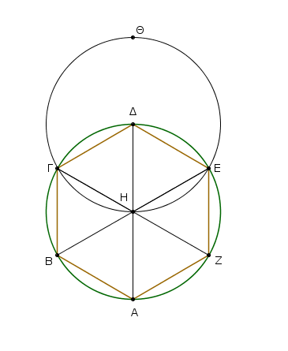
καὶ ἐπεὶ ἡ ΓΗ εὐθεῖα ἐπὶ τὴν ΕΒ σταθεῖσα τὰς ἐφεξῆς γωνίας τὰς ὑπὸ ΕΗΓ, ΓΗΒ δυσὶν ὀρθαῖς ἴσας ποιεῖ, καὶ λοιπὴ ἄρα ἡ ὑπὸ ΓΗΒ τρίτον ἐστὶ δύο ὀρθῶν· αἱ ἄρα ὑπὸ ΕΗΔ, ΔΗΓ, ΓΗΒ γωνίαι ἴσαι ἀλλήλαις εἰσίν· ὥστε καὶ αἱ κατὰ κορυφὴν αὐταῖς αἱ ὑπὸ ΒΗΑ, ΑΗΖ, ΖΗΕ ἴσαι εἰσὶν [ταῖς ὑπὸ ΕΗΔ, ΔΗΓ, ΓΗΒ].
αἱ ἓξ ἄρα γωνίαι αἱ ὑπὸ ΕΗΔ, ΔΗΓ, ΓΗΒ, ΒΗΑ, ΑΗΖ, ΖΗΕ ἴσαι ἀλλήλαις εἰσίν. αἱ δὲ ἴσαι γωνίαι ἐπὶ ἴσων περιφερειῶν βεβήκασιν· αἱ ἓξ ἄρα περιφέρειαι αἱ ΑΒ, ΒΓ, ΓΔ, ΔΕ, ΕΖ, ΖΑ ἴσαι ἀλλήλαις εἰσίν. ὑπὸ δὲ τὰς ἴσας περιφερείας αἱ ἴσαι εὐθεῖαι ὑποτείνουσιν· αἱ ἓξ ἄρα εὐθεῖαι ἴσαι ἀλλήλαις εἰσίν· ἰσόπλευρον ἄρα ἐστὶ το ΑΒΓΔΕΖ ἑξάγωνον. λέγω δή, ὅτι καὶ ἰσογώνιον. ἐπεὶ γὰρ ἴση ἐστὶν ἡ ΖΑ περιφέρεια τῇ ΕΔ περιφερείᾳ, κοινὴ προσκείσθω ἡ ΑΒΓΔ περιφέρεια· ὅλη ἄρα ἡ ΖΑΒΓΔ ὅλῃ τῇ ΕΔΓΒΑ ἐστιν ἴση· καὶ βέβηκεν ἐπὶ μὲν τῆς ΖΑΒΓΔ περιφερείας ἡ ὑπὸ ΖΕΔ γωνία, ἐπὶ δὲ τῆς ΕΔΓΒΑ περιφερείας ἡ ὑπὸ ΑΖΕ γωνία· ἴση ἄρα ἡ ὑπὸ ΑΖΕ γωνία τῇ ὑπὸ ΔΕΖ.
ὁμοίως δὴ δειχθήσεται, ὅτι καὶ αἱ λοιπαὶ γωνίαι τοῦ ΑΒΓΔΕΖ ἑξαγώνου κατὰ μίαν ἴσαι εἰσὶν ἑκατέρᾳ τῶν ὑπὸ ΑΖΕ, ΖΕΔ γωνιῶν· ἰσογώνιον ἄρα ἐστὶ τὸ ΑΒΓΔΕΖ ἑξάγωνον. ἐδείχθη δὲ καὶ ἰσόπλευρον· καὶ ἐγγέγραπται εἰς τὸν ΑΒΓΔΕΖ κύκλον. Εἰς ἄρα τὸν δοθέντα κύκλον ἑξάγωνον ἰσόπλευρόν τε καὶ ἰσογώνιον ἐγγέγραπται· ὅπερ ἔδει ποιῆσαι.
Πόρισμα ᾿Εκ δὴ τούτου φανερόν, ὅτι ἡ τοῦ ἑξαγώνου πλευρὰ ἴση ἐστὶ τῇ ἐκ τοῦ κέντρου τοῦ κύκλου. ῾Ομοίως δὲ τοῖς ἐπὶ τοῦ πενταγώνου ἐὰν διὰ τῶν κατὰ τὸν κύκλον διαιρέσεων ἐφαπτομένας τοῦ κύκλου ἀγάγωμεν, περιγραφήσεται περὶ τὸν κύκλον ἑξάγωνον ἰσόπλευρόν τε καὶ ἰσογώνιον ἀκολούθως τοῖς ἐπὶ τοῦ πενταγώνου εἰρημένοις. καὶ ἔτι διὰ τῶν ὁμοίων τοῖς ἐπὶ τοῦ πενταγώνου εἰρημένοις εἰς τὸ δοθὲν ἑξάγωνον κύκλον ἐγγράψομέν τε καὶ περιγράψομεν· ὅπερ ἔδει ποιῆσαι.
Εἰς τὸν δοθέντα κύκλον πεντεκαιδεκάγωνον ἰσόπλευρόν τε καὶ ἰσογώνιον ἐγγράψαι.
῎Εστω ὁ δοθεὶς κύκλος ὁ ΑΒΓΔ· δεῖ δὴ εἰς τὸν ΑΒΓΔ κύκλον πεντεκαιδεκάγωνον ἰσόπλευρόν τε καὶ ἰσογώνιον ἐγγράψαι.
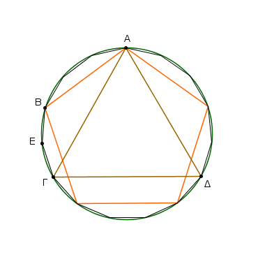
᾿Εγγεγράφθω εἰς τὸν ΑΒΓΔ κύκλον τριγώνου μὲν ἰσοπλεύρου τοῦ εἰς αὐτὸν ἐγγραφομένου πλευρὰ ἡ ΑΓ, πενταγώνου δὲ ἰσοπλεύρου ἡ ΑΒ· οἵων ἄρα ἐστὶν ὁ ΑΒΓΔ κύκλος ἴσων τμήματων δεκαπέντε, τοιούτων ἡ μὲν ΑΒΓ περιφέρεια τρίτον οὖσα τοῦ κύκλου ἔσται πέντε, ἡ δὲ ΑΒ περιφέρεια πέμτον οὖσα τοῦ κύκλου ἔσται τριῶν·
λοιπὴ ἄρα ἡ ΒΓ τῶν ἴσων δύο. τετμήσθω ἡ ΒΓ δίχα κατὰ τὸ Ε· ἑκατέρα ἄρα τῶν ΒΕ, ΕΓ περιφερειῶν πεντεκαιδέκατόν ἐστι τοῦ ΑΒΓΔ κύκλου. ᾿Εὰν ἄρα ἐπιζεύξαντες τὰς ΒΕ, ΕΓ ἴσας αὐταῖς κατὰ τὸ συνεχὲς εὐθείας ἐναρμόσωμεν εἰς τὸν ΑΒΓΔ[Ε] κύκλον, ἔσται εἰς αὐτὸν ἐγγεγραμμένον πεντεκαιδεκάγωνον ἰσόπλευρόν τε καὶ ἰσογώνιον· ὅπερ ἔδει ποιῆσαι.
῾Ομοίως δὲ τοῖς ἐπὶ τοῦ πενταγώνου ἐὰν διὰ τῶν κατὰ τὸν κύκλον διαιρέσεων ἐφαπτομένας τοῦ κύκλου ἀγάγωμεν, περιγραφήσεται περὶ τὸν κύκλον πεντεκαιδεκάγωνον ἰσόπλευρόν τε καὶ ἰσογώνιον. ἔτι δὲ διὰ τῶν ὁμοίων τοῖς ἐπὶ τοῦ πενταγώνου δείξεων καὶ εἰς τὸ δοθὲν πεντεκαιδεκάγωνον κύκλον ἐγγράψομέν τε καὶ περιγράψομεν· ὅπερ ἔδει ποιῆσαι.